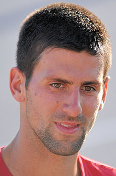

COPYright 2019 - by Guilherme Pereira
Facebook I Twitter
Novak Dojkovic o número 1 do mundo.
A primeira vez em que Novak Dojkovit foi o primeiro do mundo no Ranking Mundial foi no dia 4 de julho
de 2011, voltou a liderar entre novembro de 2012 até em setembro de 2013, logo após, reasumiu em 7 de julho de 2014
e permaneceu sendo o n°1 até 6 de novembro de 2016, hoje mantendo-se em primeiro do Ranking. Djoko é o quinto maior
tenista á ocupar a primeira posição do Ranking Mundial.
Abaixo vemos Djoko segurando a taça de n°1 do mundo no tênis.